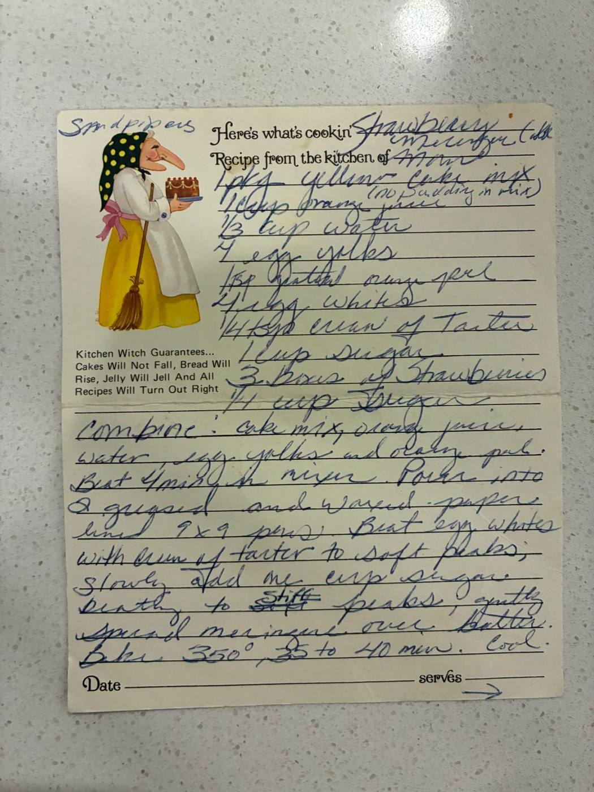
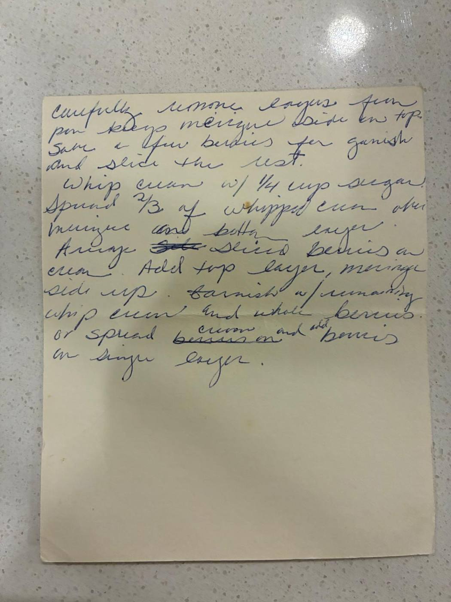

Desserts
Strawberry Meringue Cake
From the kitchen of Mom
Oven350°F
Bake35–40 min
PansTwo 9×9


Mom's original card (front and back) · tap to enlarge
Ingredients
Cake
Meringue
Filling
Method tap a step to mark it done
- Combine the cake mix, orange juice, water, egg yolks and orange peel. Beat 4 minutes with a mixer.
- Pour into two greased, waxed-paper-lined 9×9 pans.
- Beat the egg whites with the cream of tartar to soft peaks. Slowly add the 1 cup sugar, beating to stiff peaks. Gently spread the meringue over the batter.
- Bake at 350°F for 35–40 minutes. Cool.
- Carefully remove the layers from the pans, keeping the meringue side on top.
- Save a few berries for garnish and slice the rest.
- Whip the cream with the ¼ cup sugar.
- Spread ⅔ of the whipped cream over the meringue on the bottom layer. Arrange the sliced berries on the cream.
- Add the top layer, meringue side up. Garnish with the remaining whipped cream and the whole berries.
Mom’s tips
- Or spread the cream and add the berries on a single layer.